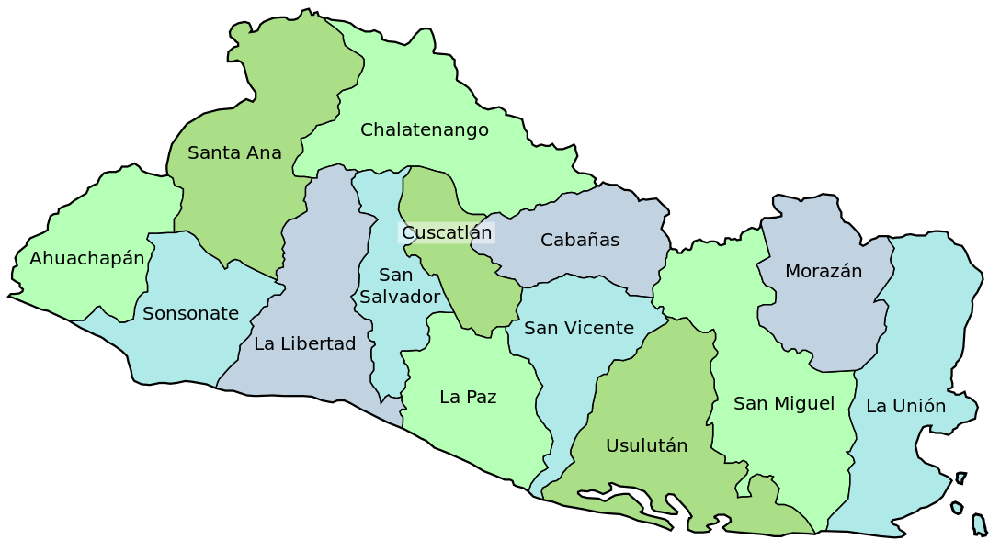

República de El Salvador

El turismo constituye uno de los mayores recursos para el desarrollo económico de El Salvador. A los excelentes atractivos naturales que posee el país, con playas paradisíacas, un clima tropical benigno y paisajes exuberantes, se une un importante patrimonio arqueológico y ecológico, con vestigios coloniales y precolombinos, además de reservas nacionales.
Sin embargo, en las últimas décadas, la diversidad y el equilibrio ecológico del país han sufrido el duro impacto del urbanismo, la contaminación y la solución; la creciente concentración de la población en las áreas urbanas ha llevado a un mayor aglutinamiento de la población en las regiones Sur y Occidental del país (especialmente en el Área Metropolitana de San Salvador). Estas zonas constituyen un ecosistema frágil, ya que en ellas se canalizan y se alimentan los acuíferos del corredor sur del país, limitando la capacidad de abastecimiento de agua a partir de las fuentes subterráneas.
Las causas principales de la contaminación y solución ambiental en El Salvador son fundamentalmente el transporte, la industria, la quema de campos y la incineración de residuos sólidos (aproximadamente la mitad de la basura generada en el Área Metropolitana de San Salvador no se recicla). A esto hay que añadir que una gran mayoría de los hogares utiliza leña para cocinar.
Con todo, El Salvador todavía cuenta con un gran número de especies animales y vegetales respecto a otros países de su entorno. Sin embargo, el país no puede relajarse en la tarea de recuperación y conservación de las últimas áreas naturales, y proyectar crear, en cooperación con los países de la región, un corredor biológico que permita mantener poblaciones estables de las especies en peligro de extinción.
El Salvador presenta, además, un potencial de excepción en el ámbito del turismo cultural, con más de 2,000 lugares arqueológicos reconocidos, muestras de las culturas maya y olmeda, principalmente. Destacan por su importancia los restos arqueológicos de Las Pirámides de San Andaréis, Joya de Cercén, Ciguatarán, Quepa, Trazuma y Huracán.